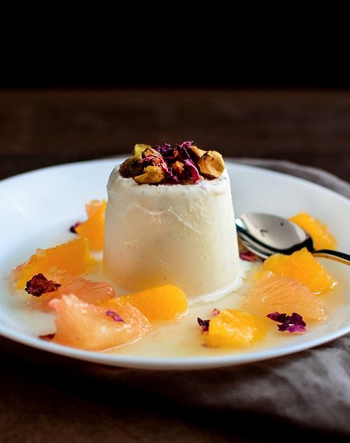

Vanilla-cardamom-kulfi-with-citrus-rose-syrup

Description
A creamy frozen treat similar to ice-cream paired with fresh citrus in a syrup flavored with a hint of ginger & a splash of rose water. It’s a delicious and refreshing fusion dessert!
Ingredients
- 2 1/2 cups heavy cream
- 1 cup milk
- 1 tsp vanilla essence
- 1.5 tsp cardamom pods seeded and powdered
- 1`/3 cup sugar
- pinch salt
- 2-4 Citrus fruits (like navel oranges, grapefruit, tangerines, blood oranges etc.)
- 1/3 cup sugar
- 1/3 cup water
- 1 inch ginger sliced
- 1/2 tsp rose water
- roasted pistachios chopped
- dried rose petals
Steps
- Add the milk, heavy cream & cardamom powder in a wide heavy-bottom sauce pan.
- Bring to a simmer while stirring often until the liquid has reduced to half it's original volume. This takes about 20-30 minutes.
- Add the sugar and stir until dissolved. Then stir in the vanilla and salt and turn off the heat.
- Transfer the mixture to a bowl and set in a larger bowl with ice-water to cool the mixture down, stirring occasionally until it's at room temperature.
- Pour the mixture into six 41/2 ounce molds (I used dixie cups) and freeze them until solid (minimum 24 hours).
- For the citrus fruit in syrup. Add the sugar and water in a sauce pan along with the sliced ginger until the sugar has dissolved and thickened slightly.
- Take the pan off the heat and let it cool to room temp. Take out the ginger or strain the syrup
- Cut the citrus fruit into segments or suprêmes, squeeze the membranes to get all the juices to set aside.
- Add 1/2 tsp rose water to the room temp syrup and pour the syrup over the citrus fruit segments and juices
- Let it steep for at least an hour or in the fridge for longer.
- To serve; simply spoon some of the citrus fruit and syrup on the bottom of a plate/bowl and unmold the kulfi (just tear the paper cups off) onto the plate/bowl.
- Top with chopped pistachios and dried rose petals.